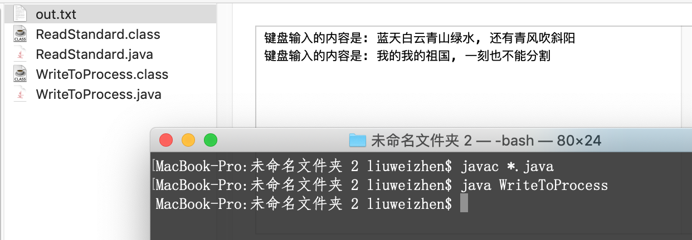

Runtime
每个Java程序都有一个与之对应的Runtime实例, 通过Runtime.getRuntime()获取, 不可新建.
public class RantimeTest {
public static void main(String[] args) {
Runtime runtime = Runtime.getRuntime();
System.out.println("处理器个数: " + runtime.availableProcessors());
System.out.println("空闲内存: " + runtime.freeMemory());
System.out.println("总内存: " + runtime.totalMemory());
System.out.println("可用最大内存: " + runtime.maxMemory());
try {
// 执行命令
Process process = runtime.exec("/Users/liuweizhen/Desktop/ForDelete/do.command");
System.out.println(process.toString()); // java.lang.UNIXProcess@1d81eb93
} catch (Exception ex) {
ex.printStackTrace();
}
}
}
注意: runtime.exec("/Users/liuweizhen/Desktop/Doc/do.command"); 这句代码通过exec启动平台上的命令之后,它就变成了一个进程, Java使用Process代表进程, 在运行这句代码之前, 假设相应目录下已存在此shell脚本文件do.command:
本机试验环境: Mac OS
cd /Users/liuweizhen/Desktop/Doc # 进入到目录.../Doc
mkdir test # 新建文件夹test
cd test # 进入到test目录下
touch my.txt # 新建一个名叫my.txt的文件
echo "hello world" > my.txt # 往my.txt中写入"hello world"字符串
对于do.command文件, 还需要授权, 调用 sudo chmod +x do.command即可.
运行了上面的Java程序之后, 会发现在/Users/liuweizhen/Desktop/Doc下生成了test/my.txt文件, 其中的内容是hello world
Java虚拟机读写其他进程数据
使用Runtime对象的exec()方法可以运行平台上的其他程序, 该方法产生一个Process对象, Process对象代表由该Java程序启动的子线程, Process类提供了如下三个方法, 用于让程序和其子进程进行通信:
- InputStream getErrorStream() 获取子进程的错误流
- InputStream getInputStream() 获取子进程的输入流
- OutpuStream getOutputStream() 获取子进程的输出流
这面的输入流还是输出流要以Java程序的角度看, 如果让子进程读取Java程序中的数据, 这就是输出流, 因为需要Java程序输出到子进程. 子进程读取Java程序的数据, 就是让Java程序输出数据到子进程, 就像把数据输出到文件中一样, 只是现在由子进程节点代替了文件节点. 相反, 如果是Java程序从子进程中读取数据, 这就是输入流.
举例说明输入流, 即由Java程序读取子进程的数据, 比如在控制台运行javac, 控制台输出如下:
$ javac -help
用法: javac <options> <source files>
其中, 可能的选项包括:
-g 生成所有调试信息
-g:none 不生成任何调试信息
-g:{lines,vars,source} 只生成某些调试信息
-nowarn 不生成任何警告
-verbose 输出有关编译器正在执行的操作的消息
-deprecation 输出使用已过时的 API 的源位置
...
这是因为调用javac命令缺少参数, 因此javac进程会把信息当做错误流输出出来, 我们使用Java程序读取子进程javac的错误输出流(相对于下面的Java程序而言, javac的错误输出流即Java程序的输入流)数据:
import java.io.BufferedReader;
import java.io.IOException;
import java.io.InputStreamReader;
public class ReadFromProcess {
public static void main(String[] args) throws IOException {
Process process = Runtime.getRuntime().exec("javac");
try (
InputStreamReader inputStreamReader = new InputStreamReader(process.getErrorStream());
BufferedReader reader = new BufferedReader(inputStreamReader);
) {
String buffer = null;
while ((buffer = reader.readLine()) != null) {
System.out.println(buffer);
}
}
}
}
不仅如此, 可以通过Process的getOutputStream()方法获得向进程输入数据的流(该流对Java程序是输出流, 因为是从Java程序输出信息到进程, 对于进程来说是输入流), 下面程序示范了在Java程序中启动Java虚拟机运行另一个Java程序, 并向另一个Java程序中输入数据.
// -- WriteToProcess.java --
import java.io.IOException;
import java.io.PrintStream;
public class WriteToProcess {
public static void main(String[] args) throws IOException {
Process process = Runtime.getRuntime().exec("java ReadStandard");
try (
// 以process的输出流创建PrintStream对象
// 这个输出流对本程序是输出流, 对process进程是输入流, 由本程序输出信息到process进程
PrintStream printStream = new PrintStream(process.getOutputStream());
) {
printStream.println("蓝天白云青山绿水, 还有青风吹斜阳");
printStream.println("我的我的祖国, 一刻也不能分割");
}
}
}
// -- ReadStandard.java --
import java.io.IOException;
import java.io.PrintStream;
public class WriteToProcess {
public static void main(String[] args) throws IOException {
Process process = Runtime.getRuntime().exec("java ReadStandard");
try (
// 以process的输出流创建PrintStream对象
// 这个输出流对本程序是输出流, 对process进程是输入流, 由本程序输出信息到process进程
PrintStream printStream = new PrintStream(process.getOutputStream());
) {
printStream.println("蓝天白云青山绿水, 还有青风吹斜阳");
printStream.println("我的我的祖国, 一刻也不能分割");
}
}
}

下面我们修改一下上面的command文件, 并让Java程序读取该command进程的输入数据:
// -- /Users/liuweizhen/Desktop/Doc/do.command --
echo "大师兄, 师傅被妖怪抓走了"
echo "呆子, 看打!"
import java.io.BufferedReader;
import java.io.IOException;
import java.io.InputStreamReader;
import java.lang.Runtime;
public class ReadFromShell {
public static void main(String[] args) throws IOException {
Process process = Runtime.getRuntime().exec("/Users/liuweizhen/Desktop/Doc/do.command");
try (
InputStreamReader inputStreamReader = new InputStreamReader(process.getInputStream());
BufferedReader reader = new BufferedReader(inputStreamReader);
) {
String buffer = null;
while ((buffer = reader.readLine()) != null) {
System.out.println(buffer);
}
}
}
}
程序运行结果:
大师兄, 师傅被妖怪抓走了
呆子, 看打!